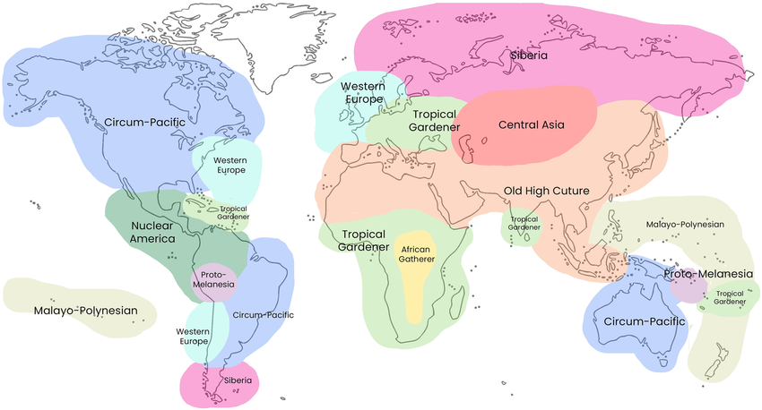

Music Across Culture
Emotional perception of music is shaped both by universal neurological responses and cultural learned music conventions

Why does music cause emotion?
How Western Listeners Learn Musical Emotions (Example of a happy song and talk about why it seems happy)
Cross culture experiment with western music (Heike Argstatter's study)
Emotional Expression Around the World (Pecking opera, middle eastern, african)
Comparison of 2 songss with the same intended emotion
Summary: Why is some shared why is some not?